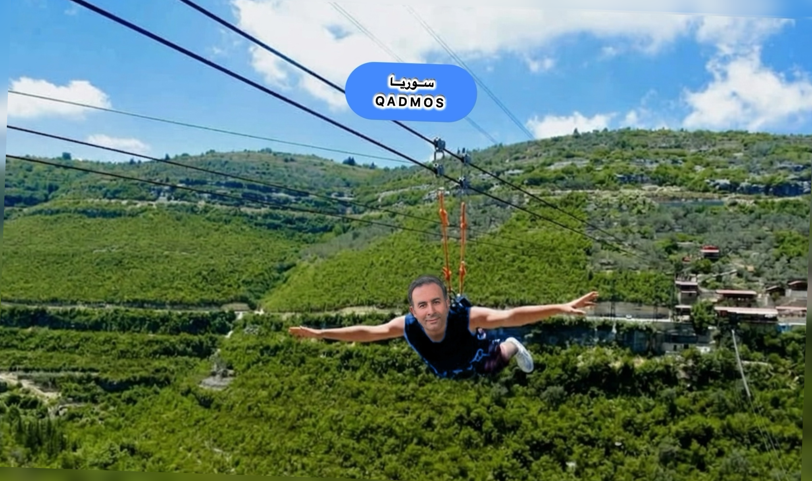
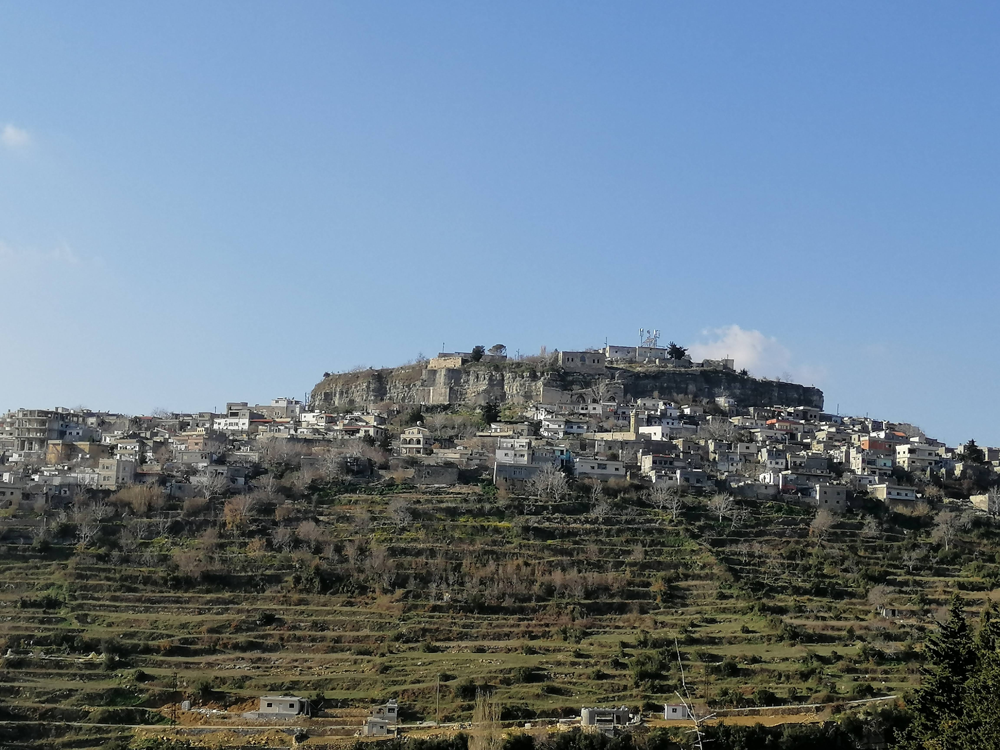
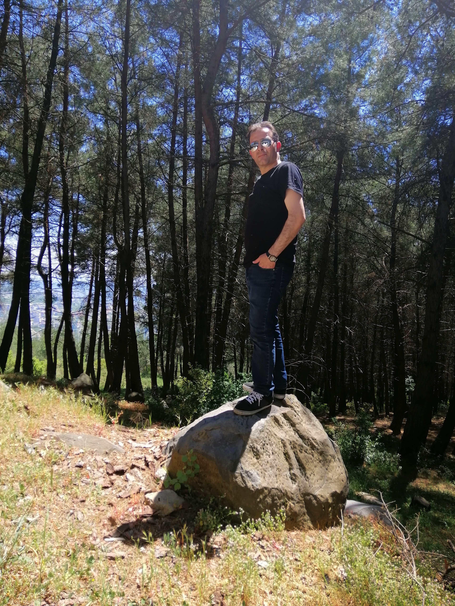

استكشف سحر القدموس
بصفتي مرشداً محلياً، أدعوكم لزيارة مدينة الضباب والجمال، حيث الطبيعة الجبلية الساحرة وتجارب المغامرة الفريدة في زيب لاين الأطلال.
Explore Al-Qadmus Magic
As a local guide, I invite you to visit the city of fog and beauty, where charming mountain nature and unique adventure experiences await at Al-Atlal Zip Line.




